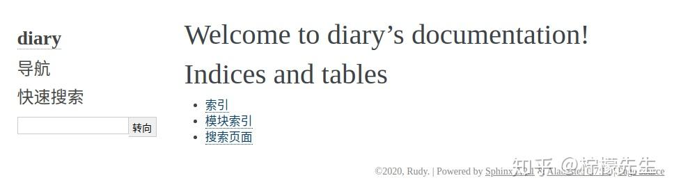
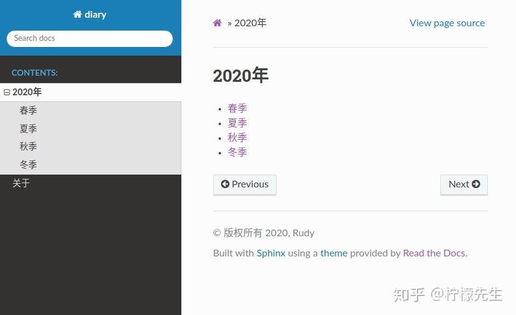
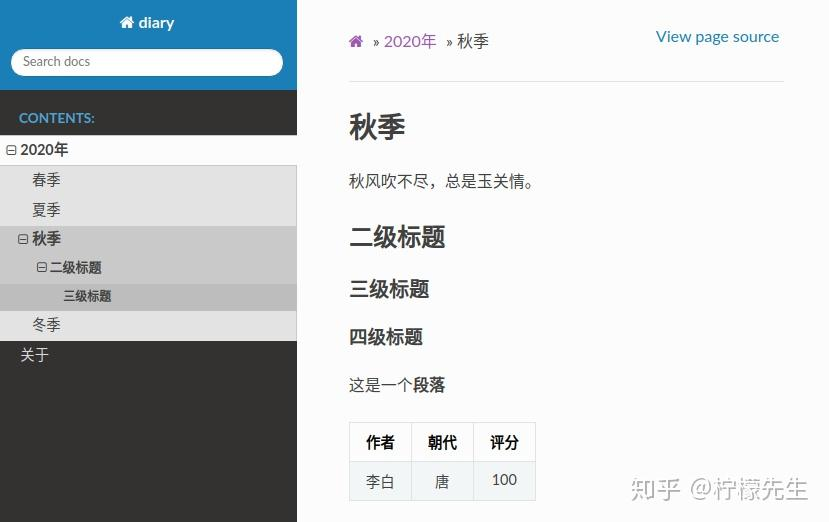

OtherApplication
Windows版微信WechatAppEx等进程占用内存多，干掉对应的exe
对应的exe通常是在C:\Users\George\AppData\Roaming\Tencent\WeChat\XPlugin\Plugins\RadiumWMPF\9105\extracted\runtime目录下。
删除该文件夹，然后重新新建一个同名文件夹/文件。右键修改该文件属性：安全性-》选项-》停用继承。然后修改所有者为：NT SERVICE\TrustedInstaller。
对应的，删除C:\Users\George\AppData\Roaming\Tencent\WeChat\XPlugin\Plugins目录下的其他组件文件夹，修改为空白文件，并修改权限为TrustedInstaller使其无法被读取、修改。
Adobe提示非正版软件弹窗
用FAB（Firewall App Blocker）直接添加防火墙，把这玩意禁止联网。也可以手动添加防火墙。
C:\Program Files (x86)\Common Files\Adobe\
#C:\Program Files (x86)\Common Files\Adobe\AdobeGCClient\
最好把Adobe软件其他文件夹也给禁止联网：
C:\Program Files (x86)\Adobe\
C:\Program Files\Adobe\
Localsend提示报错
(10013): 以一种访问权限不允许的方式做了一个访问套接字的尝试
net stop winnat
netsh interface ipv4 show excludedportrange protocol=tcp
net start winnat
netsh interface ipv4 show excludedportrange protocol=tcp
mkdocs
pip install mkdocs
#conda install mkdocs
mkdocs serve
mkdocs build
Sphinx
https://zhuanlan.zhihu.com/p/264647009
安装最新版本的 Sphinx 及依赖。
pip3 install -U Sphinx
为了完成本示例，还需要安装以下软件包。
pip3 install sphinx-autobuild
pip3 install sphinx_rtd_theme
pip3 install recommonmark
pip3 install sphinx_markdown_tables
安装完成后，系统会增加一些 sphinx- 开头的命令。
sphinx-apidoc sphinx-autobuild sphinx-autogen sphinx-build sphinx-quickstart
3. 快速开始
3.1 创建项目
我们以建立 diary 日记文档系统为例，先创建并进入 diary 文件夹（后续所有操作都在该文件夹内）。执行 sphinx-quickstart 构建项目框架，将会出现如下对话窗口。
欢迎使用 Sphinx 3.2.1 快速配置工具。
Please enter values for the following settings (just press Enter to
accept a default value, if one is given in brackets).
Selected root path: .
You have two options for placing the build directory for Sphinx output.
Either, you use a directory "_build" within the root path, or you separate
"source" and "build" directories within the root path.
> 独立的源文件和构建目录（y/n） [n]:
首先，询问你是否要创建独立的源文件和构建目录。实际上对应两种目录结构，一种是在根路径下创建“_build”目录，另一种是在根路径下创建“source”和“build”两个独立的目录，前者用于存放文档资源，后者用于保存构建生成的各种文件。根据个人喜好选择即可，比如我更倾向于独立目录，因此输入 y。
接着，需要输入项目名称、作者等信息。
The project name will occur in several places in the built documentation.
> 项目名称: diary
> 作者名称: Rudy
> 项目发行版本 []: v1
然后，可以设置项目的语言，我们这里选择简体中文。
If the documents are to be written in a language other than English,
you can select a language here by its language code. Sphinx will then
translate text that it generates into that language.
For a list of supported codes, see
https://www.sphinx-doc.org/en/master/usage/configuration.html#confval-language.
> 项目语种 [en]: zh_CN
OK，项目创建完成！（两种目录结构分别如下）

Makefile：可以看作是一个包含指令的文件，在使用 make 命令时，可以使用这些指令来构建文档输出。build：生成的文件的输出目录。make.bat：Windows 用命令行。_static：静态文件目录，比如图片等。_templates：模板目录。conf.py：存放 Sphinx 的配置，包括在sphinx-quickstart时选中的那些值，可以自行定义其他的值。index.rst：文档项目起始文件。
此时我们在 diary 目录中执行 make html，就会在 build/html 目录生成 html 相关文件。

在浏览器中打开 index.html，将会看到如下页面。

当然，直接访问 html 文件不是很方便，所以我们借助 sphinx-autobuild 工具启动 HTTP 服务。
sphinx-autobuild source build/html
默认启动 8000 端口，在浏览器输入 http://127.0.0.1:8000 。但是看到的页面跟上图一样，那换个主题吧！
3.2 修改主题
打开 conf.py 文件，找到 html_theme 字段，修改为“classic”主题。
#html_theme = 'alabaster'
html_theme = 'classic'
保存！可以看到网页变成这样了
Sphinx 为我们提供了好多可选的主题，在 Sphinx Themes 都可以找到。大家最熟悉的应该是 sphinx_rtd_theme 主题，其实我们前面已经安装好了。
html_theme = 'sphinx_rtd_theme'
那就用这个主题吧！

4. 最佳实践
4.1 index.rst 语法
受篇幅限制，本文无法详细介绍 reST 语法，具体可查看官方文档 RESTRUCTUREDTEXT 简介，这里主要分析 index.rst 的内容。
.. diary documentation master file, created by
sphinx-quickstart on Sat Oct 10 22:31:33 2020.
You can adapt this file completely to your liking, but it should at least
contain the root `toctree` directive.
Welcome to diary's documentation!
=================================
.. toctree::
:maxdepth: 2
:caption: Contents:
Indices and tables
==================
* :ref:`genindex`
* :ref:`modindex`
* :ref:`search`
- 第1-4行由
..+ 空格开头，属于多行评论（类似于注释），不会显示到网页上。 - 第6-7行是标题，reST 的标题需要被双下划线（或单下划线）包裹，并且符号的长度不能小于文本的长度。
- 第9-11行是文档目录树结构的描述，
.. toctree::声明了一个树状结构（toc 即 Table of Content），:maxdepth: 2表示目录的级数（页面最多显示两级），:caption: Contents:用于指定标题文本（可以暂时去掉）。 - 第15-20行是索引标题以及该标题下的三个索引和搜索链接。
4.2 《我的日记》
我们进入 source 目录，修改 index.rst 文件，将标题改为“我的日记”，并添加一个 about 页面。
我的日记
=================================
.. toctree::
:maxdepth: 2
:caption: Contents:
about
因此我们需要在 source 目录下新建一个 about.rst 文件，并写下内容：
关于
========
这是我的公开日记
打开浏览器，输入 http://127.0.0.1:8000，将会看到如下页面。


接下来，我们为日记添加一级子目录。先在 source/index.rst 中添加路径信息。
我的日记
=================================
.. toctree::
:maxdepth: 2
:caption: Contents:
2020/index
about
在 source 目录下新建一个名为“2020”的文件夹，在“2020”文件夹中再创建“春、夏、秋、冬”四个文件夹，并且在其中分别创建 contents.rst 文件。最后，别忘了还有要新建一个 index.rst 文件。这一步完成后，2020 目录结构如下：
2020
├── index.rst
├── 春
│ └── contents.rst
├── 冬
│ └── contents.rst
├── 秋
│ └── contents.rst
└── 夏
└── contents.rst
在 2020/index.rst 文件中添加如下内容。
2020年
=================================
.. toctree::
:maxdepth: 2
春/contents
夏/contents
秋/contents
冬/contents
以及四个 contents.rst 文件的内容：
- 春/contents.rst
春季
========
春眠不觉晓，处处闻啼鸟。
- 夏/contents.rst
夏季
========
夏早日初长，南风草木香。
- 秋/contents.rst
秋季
========
秋风吹不尽，总是玉关情。
- 冬/contents.rst
冬季
========
冬尽今宵促，年开明日长。
好啦！打开浏览器看一下吧～


好啦，日记就先写到这吧！喜欢的小伙伴可以在 luhuadong/diary 点赞+下载。
4.3 支持 Markdown
前面我们都是用 reST 语法来操作，但如果我们想用 Markdown 写，或者有大量 Markdown 文档需要迁移怎么办呢？
虽然 Sphinx 默认不支持 Markdown 语法，但可以通过 recommonmark 插件来支持。另外，如果需要支持 markdown 的表格语法，还需要安装 sphinx-markdown-tables 插件。这两个插件其实我们前面已经安装好了，现在只需要在 conf.py 配置文件中添加扩展支持即可。
extensions = [
'recommonmark',
'sphinx_markdown_tables'
]
我们以“秋”为例，将 rst 文件修改为 md 文件。
cd 秋
mv contents.rst contents.md
修改 contents.md 文件，增加一些 Markdown 语法内容：
# 秋季
秋风吹不尽，总是玉关情。
## 二级标题
### 三级标题
#### 四级标题
这是一个**段落**
| 作者 | 朝代 | 评分 |
| :--: | :--: | :--: |
| 李白 | 唐 | 100 |
噔噔！打开浏览器，完美～